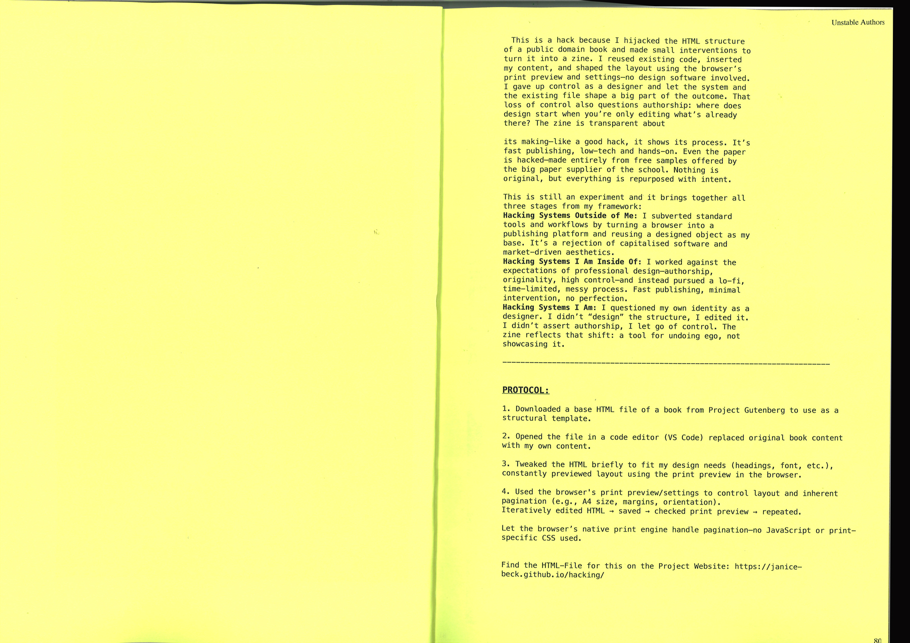
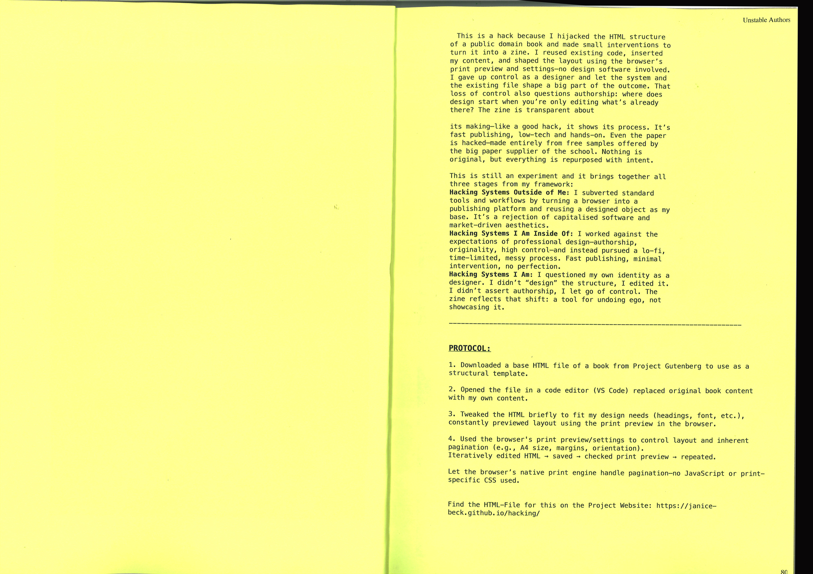

I hijacked the HTML structure
of a public domain book and made small interventions to
turn it into a zine (Process Documentation of Experiments)
4.1 and
4.2
.
I reused existing code, inserted
my content, and shaped the layout using the browser’s
print preview and settings—no design software involved.
I gave up control as a designer and let the system and
the existing file shape a big part of the outcome. That
loss of control also questions authorship: where does
design start when you’re only editing what’s already
there?
The zine is transparent about
its making—like a good hack, it shows its process. It’s
fast publishing, low-tech and hands-on. Even the paper
is hacked—made entirely from free samples offered by
the big paper supplier of the school. Nothing is
original, but everything is repurposed with intent.
I enjoyed this experiment. I felt like it is well aligned with my overall concept. It was also nice to review the workshop results one more time. I liked the feeling of autonomy. The hard part: aesthetically, it doesn’t go with the expectations I have of my output,
but breaking or questioning those is also a part of this project.
| What | Layout, Text hierarchy |
|---|---|
| Sources | The Project Gutenberg eBook of An Illustrated Dictionary of Words used in Art and Archaeology |
| Tools | Code Editor, Browser |
| Steps |
1. Downloaded a base HTML file of a book from Project Gutenberg to use as a
structural template. 2. Opened the file in a code editor (VS Code) replaced original book content with my own content. 3. Tweaked the HTML briefly to fit my design needs (headings, font, etc.), constantly previewed layout using the print preview in the browser. 4. Used the browser's print preview/settings to control layout and inherent pagination (e.g., A4 size, margins, orientation). Iteratively edited HTML → saved → checked print preview → repeated. Let the browser’s native print engine handle pagination—no JavaScript or printspecific CSS used. |
| Output | Print File → Zine |
| HTML file | on Github |
 
